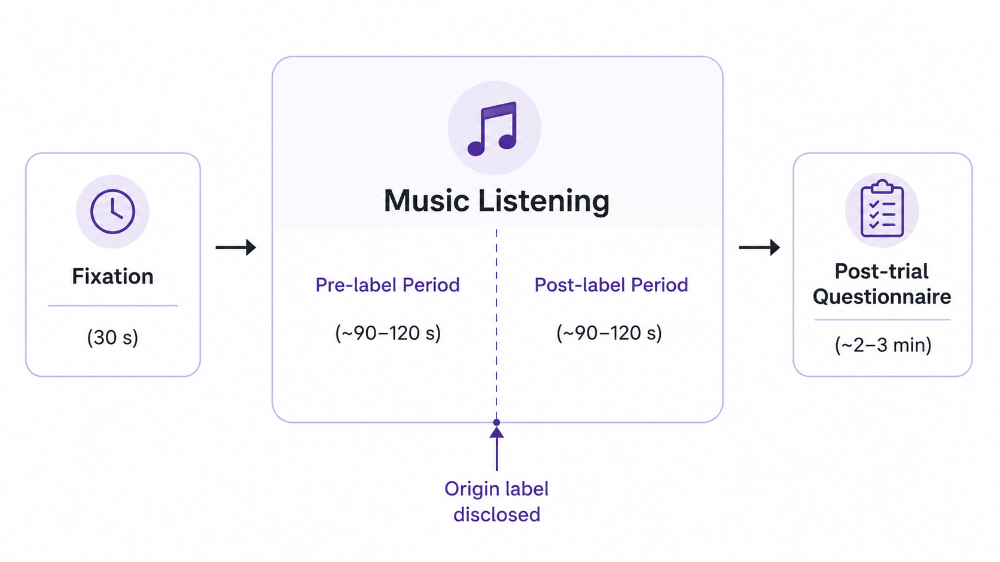
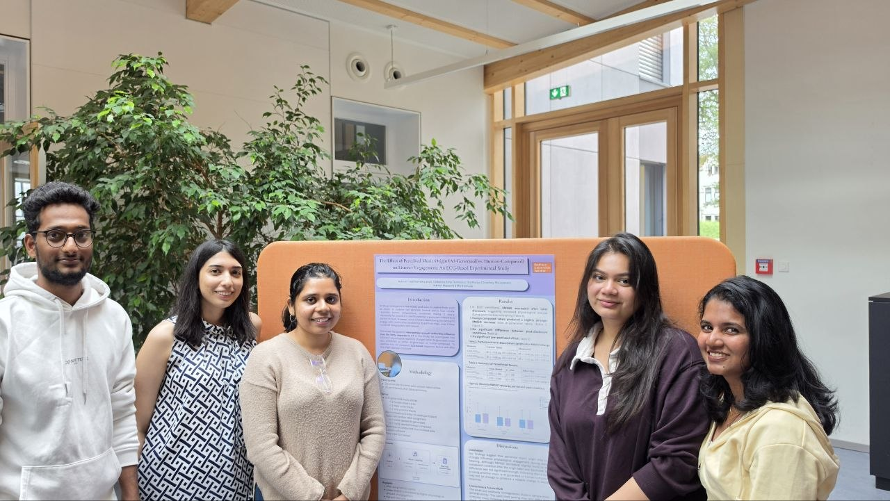

Physiological Computing · ECG
Perceived Music Origin & Listener Engagement
An ECG-based experiment on whether believing a track is AI-generated or human-composed changes physiological engagement. Every track was in fact AI-generated — only the origin label shown to the listener differed.
- 21 participants, 6 AI tracks, ECG recorded with a Polar H10 sensor
- HRV analysed through RMSSD with paired t-tests and Cohen's d
- Arousal rose after the label was disclosed, but AI vs. human was not significant

